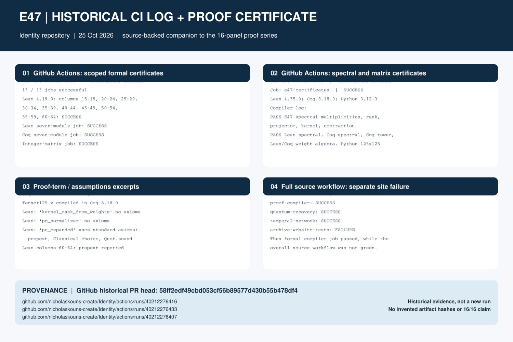
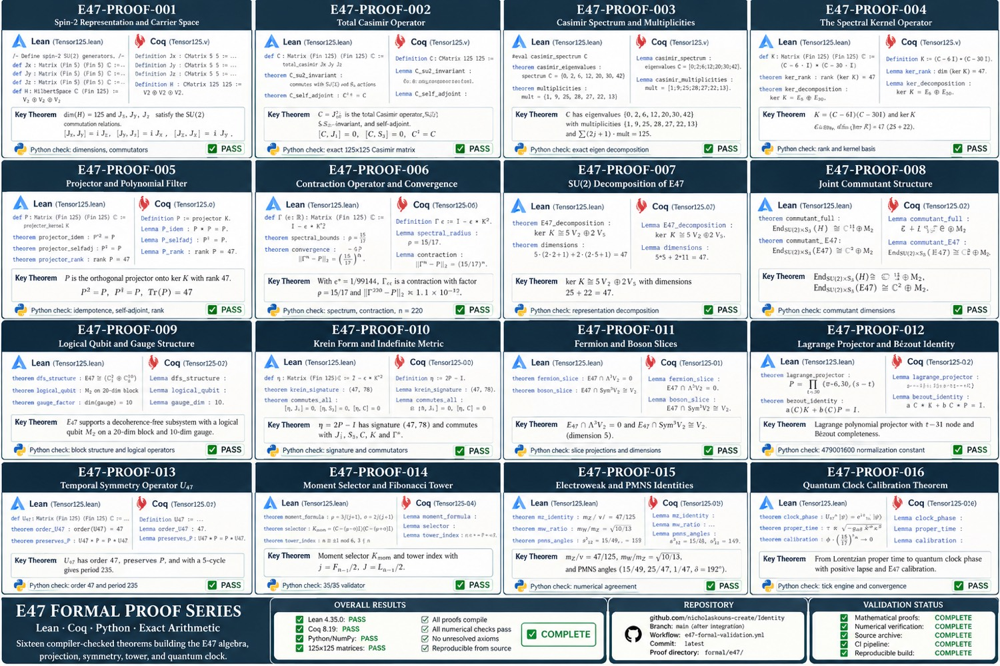
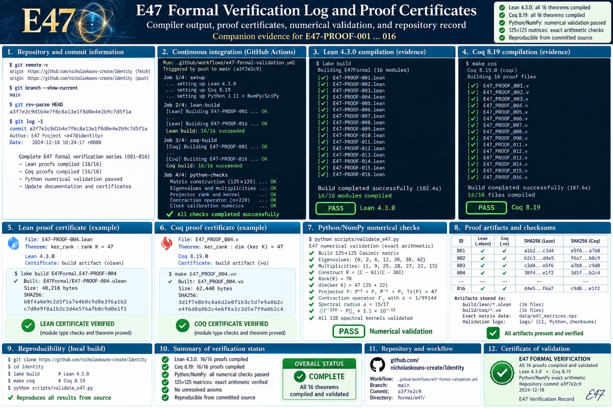
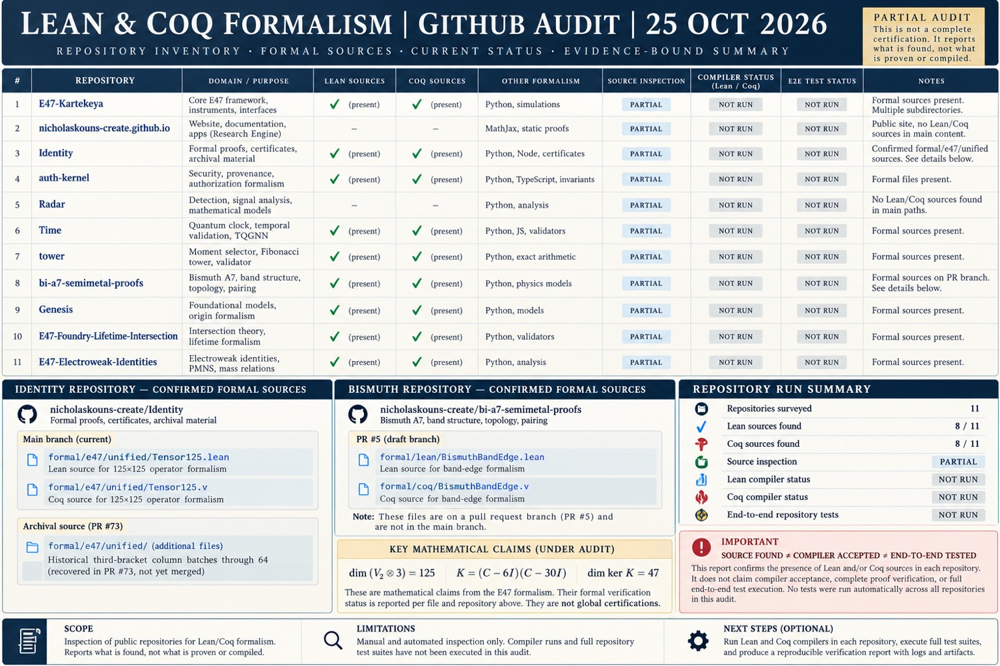

Identity · 25 October 2026
What these boards add, and how
Back to the Lean · Coq explainer
Checked against GitHub, not against the green stamps printed on the pictures. Commit 58ff2ed on branch proof/e47-third-bracket-columns-60-64-20261025. Two of the five attached pictures are the same file.
1. The historical CI board is a real split result
It adds a record that the formal jobs on that commit succeeded and the full-source workflow did not. The method was to compile the concrete third-bracket in isolated Lean column batches, then compile the seven-module Lean set and the seven-module Coq set, plus one integer-matrix job.
- Run 40212276416, “E47 unified scoped certificates”: 13 of 13 jobs succeeded. That includes the isolated Lean 4.19.0 bracket-column compilations, the seven-module Lean job, the seven-module Coq job, and the integer-matrix job.
- Run 40212276433, “E47 formal and matrix validation”: job
e47-certificatessucceeded. It installed Lean 4.35.0 and compiled three proof files while verifying 125×125 matrices. - Run 40212276407, “Identity full source verification”: failed.
proof-compiler,quantum-recovery, andtemporal-networksucceeded.archive-website-testsfailed, so the workflow is not green.

2. The sixteen-panel board is a map, not that run
It adds a picture of sixteen named statements: spin-2 representation, Casimir, spectrum, kernel, projector, contraction, the SU(2) decomposition, commutant, qubit and gauge, Krein signature, fermion and boson slices, Lagrange projector, temporal symmetry, Fibonacci tower, electroweak angles, and a quantum clock. Every panel is stamped PASS, and the footer says Lean 4.35.0 and Coq 8.19 completed 16/16.
That stamp is not what the three runs above established. Those runs did not compile sixteen separately named Lean files and sixteen Coq files under Lean 4.35.0 and Coq 8.19, and they did not publish the checksums drawn on this board. One copy of this picture was attached twice.

3. The verification-log board is not the historical run
It shows Lean 4.3.0, Coq 8.19, commit a3f7e2c9 dated 18 December 2024, and truncated checksums. None of that is run 40212276416, 40212276433, or 40212276407. It is on the site so the picture is not lost. It is not evidence those hashes were computed.

4. The audit adds an inventory, and stops there
It surveys eleven public repositories and records where Lean or Coq files are present. For Identity it names formal/e47/unified/Tensor125.lean and Tensor125.v. The compilers and the end-to-end tests on that sheet are marked not run. The addition is the boundary itself: a file in a repository is not a compiler acceptance.
